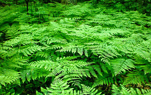
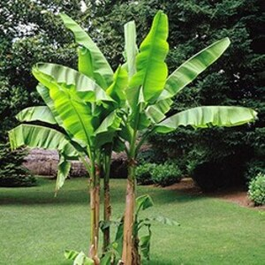

Les plantes herbacées

Le terme "herbacées" qualifie des plantes ne formant pas de tissus ligneux à proprement parler. Ce sont des "herbes" au sens botanique du terme car les tiges ne se transforment pas en bois. Les tissus restent tendres. Parmi elles, les graminées, les fougères, les herbes au sens commun du terme, les gauras, les coreopsis, les pétunias, les œillets et bien d'autres plantes ornant le jardin.

Sur le plan botanique, les palmiers formant un stipe et non un tronc, sont des plantes herbacées, tout comme les bananiers ou encore les bambous. Ces plantes à grand développement pour certaines espèces restent malgré tout des herbacées.